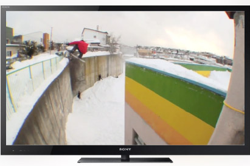
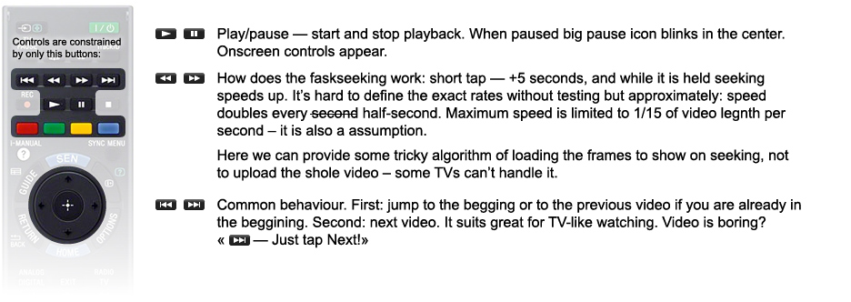
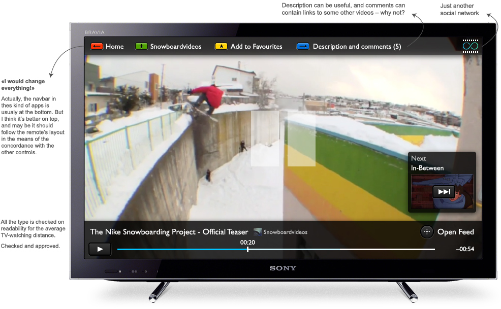
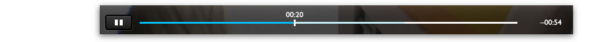
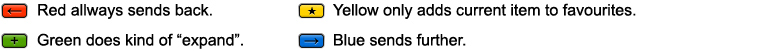
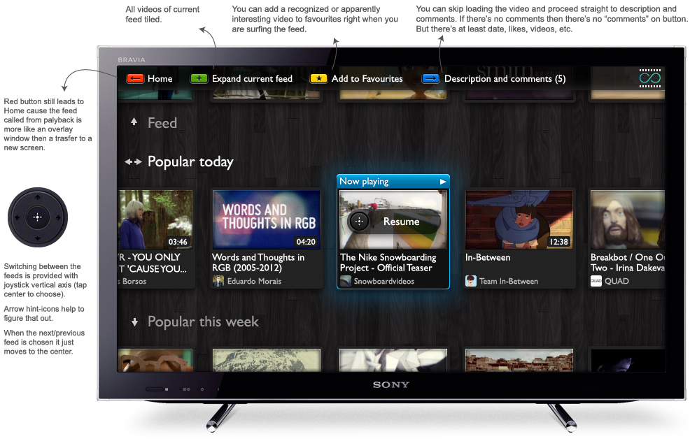
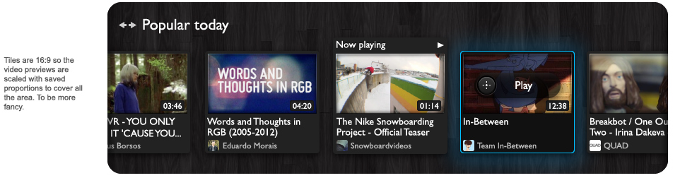
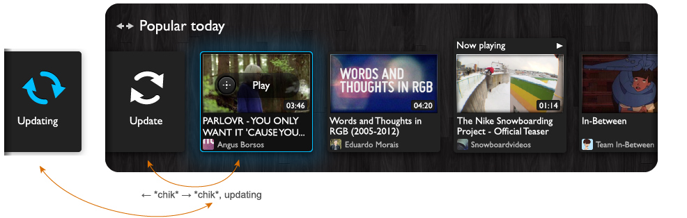

One of the given constraints — the remote showed further.
Ideal scenario is when the user starts the app, finds something new and worthy and then start watching anything in a row of recomendations, suggestions and so on.
Okay, first — the player.
After choosing the video, clicking on thumb, it is showed in fullscreen. The quality is highest and reduces only on connection proplems trying to get back to high from time to time. We don't bother user with geeky quality-controls.
The video could be paused or you can seek through it with traditional buttons:
Pause:
While seeking through the video only a timebar appears.
More on navigation. We've got a navigation panel on top. Buttons functions depend on the context, but with general logic:
Examples will make it clear.
There is an «Open Feed» button on the pause screen. It responds on a center joystick and you can also call it while the video is playing, not paused.
Opening the feed takes us away from the current video and we see the feed where this video is in, and the video itself. This transition should be animated. (Kind of a Zoomworld interface)
The played clip is selected at first and if you tap central button again you will get back to watching. You can navigate in a feed using left and right joystick. Selection is moved to penultimate position and then scrolls the list:
In the begining of the list there's an "update" element, it's like a tvish pull-to-refresh. To update feed just swtich selection to "update", it immediatelly goes back to last clip and update starts. It can be used both in the begining and in the end if it's not auto-load.
You can easily switch between several feeds (Feed, Popular, Favorites, etc.) using up and down joystick. It is better not to overburden the user with a lot of unwanted info — likes, dates added, etc. The feed should be just good to be simply watched.
If there had been some kind of thematic division of videos, it would have been posible to add some "recommended" feeds. But adding more lists leads to changing the architechture.
Start screen can be this dashboard or a special editor-sorted video selection updated rapidly. Plus superpopular videos and features. And it's important to focus on some video by defalut, for user to be able to start watching straight away, like a TV broadcast.
Users can also use the app without signing in, but they won't see friend-feed, favourites and some specials may be.